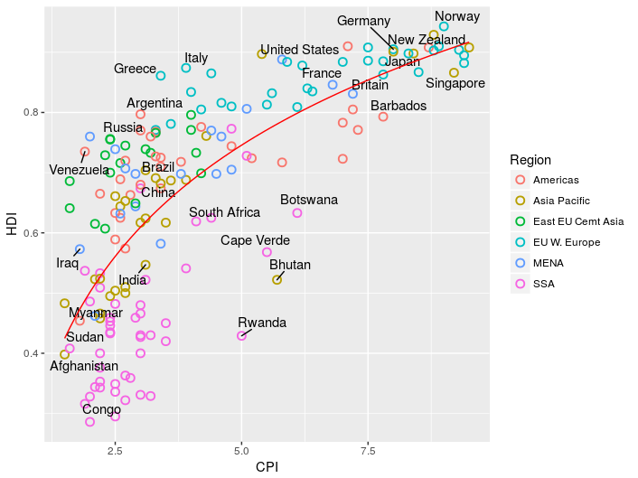

Improving plot appearance in ggplot2
Our graph now contains most of the functional data from the Economist graph. However, it misses the labels added to highlight some countries of note and doesn't yet look very attractive. Lets put those things right.
Labelling datapoints
The Economist chose to pick out a subset of countries to highlight.
To do the same in R we need to create a list of the datapoints we are interested in.
To create a list in R we use the c function:
>target_countries <- c(
"Russia", "Venezuela", "Iraq", "Myanmar", "Sudan",
"Afghanistan", "Congo", "Greece", "Argentina", "Brazil",
"India", "Italy", "China", "South Africa", "Spane",
"Botswana", "Cape Verde", "Bhutan", "Rwanda", "France",
"United States", "Germany", "Britain", "Barbados", "Norway", "Japan",
"New Zealand", "Singapore"
)
Now we need to pick out the data for these countries from econ.
The operator %in% can be used to match entries in econ$Country that appear in the target_countries list we just made.
We can combine this with the subset function to get the data we want:
>labeled_countries <- subset(econ, Country %in% target_countries)
This graph has a lot of closely packed datapoints and we don't want our labels to overlap. This means we need a non-standard text labelling geom. Load the ggrepel library to add this to our environment.
library(ggrepel)
The geom we want is geom_text_repel.
As we only want to label the countries in labeled_countries we need to set the data option for this geom, rather than using the default inhereted from ggplot (in this case econ).
Try creating teh labelled graph using:
>ggplot(econ, aes(x = CPI, y = HDI)) +
geom_point(aes(color = Region), shape = 1, stroke = 1, size = 2.5) +
geom_text_repel(aes(label = Country), data = labeled_countries, force = 10) +
stat_smooth(method = "lm", formula = y ~ log(x), se = FALSE, color = "red", size = 0.5)
